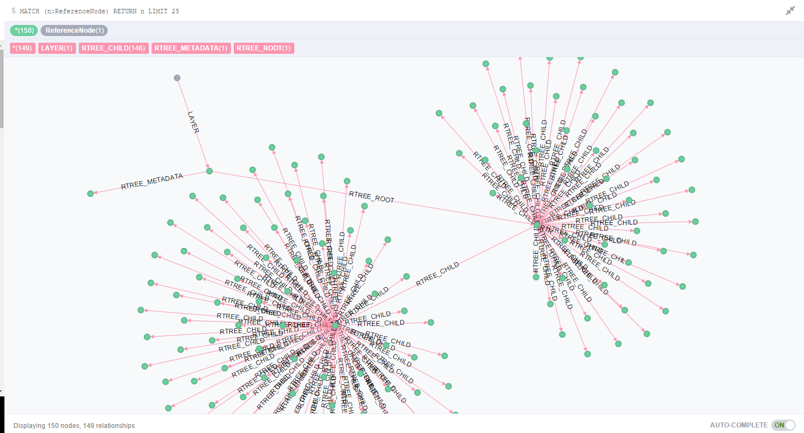
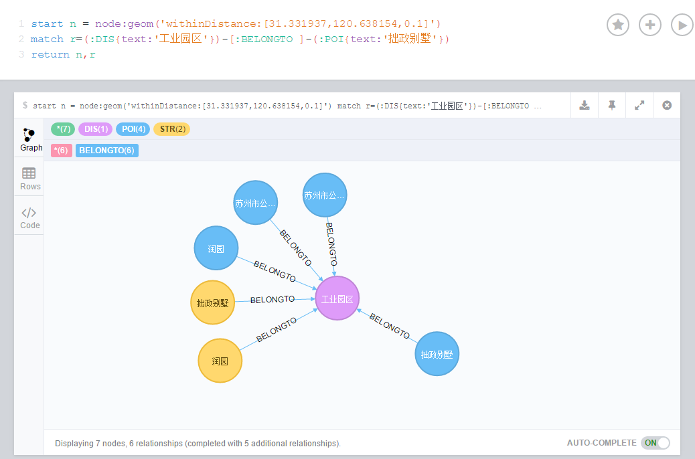

Neo4j采用Neo4j Spatial插件实现空间索引，Neo4j Spatial可使用API或Cypher执行空间查询操作，另作为插件可部署于GeoServer与uDig；与Oracle/MySQL Spatial Extention/MongoDB 2dSphere等空间模块相比，这种结合关系与空间的分析更值得尝试！
相关资料
neo4j spatial github官网
lyonwj博客
Neo4j Spatial简介
Neo4j Spatial is a library of utilities for Neo4j that faciliates the enabling of spatial operations on data.
- Utilities for importing from ESRI Shapefile as well as Open Street Map files
- Support for all the common geometry types
- An RTree index for fast searches on geometries
- Support for topology operations during the search (contains, within, intersects, covers, disjoint, etc.)
- The possibility to enable spatial operations on any graph of data, regardless of the way the spatial data is stored, as long as an adapter is provided to map from the graph to the geometries.
- Ability to split a single layer or dataset into multiple sub-layers or views with pre-configured filters
neo4j spatial 安装
- 在neo4j spatial github maven库下载最新服务端Neo4j Spatial Server插件，下载后解压到neo4j plugin目录；
- 验证安装状态：以http://localhost:7474/db/data/ext/SpatialPlugin验证是否成功安装，将返回以下几类graphdb的操作
- addSimplePointLayer,addEditableLayer,addCQLDynamicLayer,addGeometryWKTToLayer
- addNodeToLayer,addNodesToLayer,updateGeometryFromWKT
- getLayer,findClosestGeometries, findGeometriesWithinDistance,findGeometriesInBBox
- 索引新建
- Create a Spatial index
- Create nodes with lat/lon data as properties
- Add these nodes to the Spatial index
- RTree关系可视化

Neo4j Spatial REST服务可参考Neo4j Spatial v0.12-neo4j-2.0.0-SNAPSHOT文档
neo4j spatial应用
The technology industry and open source groups are building Spatial tools (“where” analysis) and Graph tools (relationship analysis) so that businesses can improve their insight on patterns, trends, and (perhaps most importantly) outliers in the networks.
- using-neo4j-spatial-and-leaflet-js-with-mapbox
- neo4j-spatial-part1-finding-things-close-to-other-thing
- Mapping the World’s Airports With Neo4j Spatial and Openflights
- Geospatial Indexing US Congressional Districts with Neo4j-spatial
- Webinar: Recommend Restaurants Near Me: Introduction to Neo4j Spatial
- Finding Valuable Outliers and Opportunities Using Graph and Spatial
- legis-graph-spatial
Java构建Neo4j 空间索引
参考distance-queries-with-neo4j-spatial
gist代码示例：Neo4j Emberded 嵌入式SpringBean配置
gist代码示例：Java实现Neo4j Spatial新建索引和空间查询测试用例
关于withinDistance查询结果排序问题
球面距离计算采用OrthodromicDistance算法
OrthodromicDistance算法：d = acos( sin(lat1)*sin(lat2) + cos(lat1)*cos(lat2)*cos(lon2-lon1) ) * R，
Neo4j-Spatial中的实现：org.neo4j.gis.spatial.pipes.processing.OrthodromicDistance返回结果默认以命中目标坐标与查询中心点坐标的距离进行排序
参考Neo4j Spatial 源码测试用例中的：TestSimplePointLayer中的checkPointOrder，
查询示例：List<GeoPipeFlow> res = GeoPipeline. startNearestNeighborLatLonSearch( layer, start, distance).sort("OrthodromicDistance").toList();
neo4j spatial query 示例
withinDistance缓存区查询
查询点120.678966,31.300864周边0.1km范围内的Node
格式：START n = node:<layer>("withinDistance:[<y>, <x>, <max distance in km>]")
|
|
bbox矩形查询
查询由点1(120.678966,31.300864)与点2(120.978966,31.330864)构成的BBox矩形范围内的Node
格式：START n = node:<layer>("bbox:[<min x>, <max x>, <min y>, <max y>]")
|
|
withinWKTGeometry查询
查询由点1(120.678966,31.300864)与点2(120.978966,31.330864)构成的Polygon多边形范围内的Node
格式：START n = node:<layer>("withinWKTGeometry:POLYGON((<x1> <y1>, ..., <xN> <yN>, <x1> <y1>))")
|
|
空间索引和关系遍历联合查询
联合geom索引图层和match进行查询
- 查询指定范围&&指定path路径中的节点
|
|
优化后
|
|
查询结果可视化效果图

- 联合查询：withinWKTGeometry空间过滤与match属性过滤
|
|
- CypherQL必须先执行空间索引，再执行Relation过滤，这样每个空间围内的Node都要进行Relationship过滤，效率较低；
- 若能先执行Match再执行空间过滤，可提高SpatialIndex命中率
- 若无分页需求，可临时采用NativeAPI进行Match过滤，再以SpatialIndex withinDiatance过滤。
- 若需要分页的话skip limit必须在CypherQL中实现，但是空间索引与关系遍历并行的CQL怎么写？暂时无解！
问题
建空间索引内存溢出问题
neo4j transaction优化方案：每n条手动提交事物
|
|
建空间索引速度还是偏慢，35万左右的数据量建索引花了将近1.5小时。